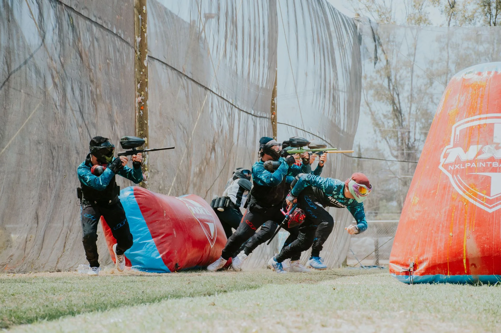

EL BOSQUE, CÁDIZ PAINTBALL AL AIRE LIBRE

Tu gente. Tu próxima partida.
PAINTBALL
El Bosque
Sal del chat.
Entra en el juego.
Un plan que se juega
con los tuyos.
Pisa el campo
Fotografía ilustrativa. No representa las instalaciones de Paintball El Bosque.
Una mirada.
Una decisión.
Y salís a jugar.